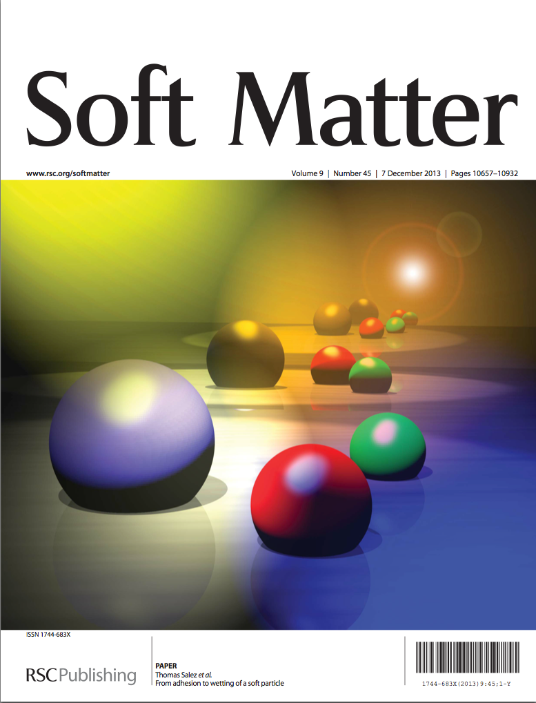

Elie RAPHAEL
Director of Research at CNRS
Gulliver Laboratory
Adjunct Professor of Mathematics
ESPCI, Paris
elie.raphael(AT)espci.psl.eu
Elie RAPHAEL
Director of Research at CNRS
Gulliver Laboratory
Adjunct Professor of Mathematics
ESPCI, Paris
elie.raphael(AT)espci.psl.eu
I work at UMR Gulliver 7083, a laboratory located at the City of Paris Industrial Physics and Chemistry Higher Educational Institution ESPCI.
My research focuses on the physics of soft matter and interfaces. In particular, I am interested in the behavior of polymers at interfaces, elastocapillarity phenomena, the propagation of capillary gravity waves, and the dynamics of granular materials.
I am a Fellow of the American Physical Society (2015).
For my teaching activities at ESPCI, see here.



Cohesion tunes the angle of repose in granular piles of frictionless droplets
Y. Heshmatzadeh, E. Raphael, K. Dalnoki-Veress
Submitted (2026)
Wave resistance for stochastic motion at interfaces
M. Arutkin, S. Reuveni, E. Raphael
Submitted (2026)
Capillary–gravity wave resistance of a translating, pulsating line source
H. Diamant, E. Raphael
Journal of Fluid Mechanics Rapids, (2026) 1045:R1
Spreading and adsorption of silicone oil droplets on silicone elastomer films
L. Dutcher, B. Baylis, J. Dutcher, E. Raphael, K. Dalnoki-Veress
The European Physical Journal E, 49:25 (2026) PDF
Stationary and transient correlations in driven electrolytes
H. Bonneau, V. Démery, E. Raphael
Journal of Statistical Physics, (2025) 033201 PDF
Swelling and evaporation determine surface morphology of grafted hydrogel thin films
C. Kopecz-Muller, C. Gaunand, T. Tran, M. Labouse, E. Raphael, T. Salez, F. Box, J. D. McGraw
Langmuir, 41 (4) (2025) 2400-2410 PDF
Studies on V-formation and echelon flight utilizing flapping-wing drones
J. Martinez-Ponce, B. Herkenhoff, A. Aboelezz, C. Urban, S. Armanini, E. Raphael, M. Hassanalian
Drones, 4 (2024) 395 PDF
Directed droplet motion along thin fibers
H. Khattak, A. Shanzeelaa, E. Raphael, K. Dalnoki-Veress
PNAS Nexus, 3 (2024) 1 PDF
Temporal response of the conductivity of electrolytes
H. Bonneau, V. Démery, E. Raphael
Journal of Statistical Physics, (2023) 073205 PDF
On the bridge hypothesis in the glass transition of freestanding polymer films
H. Bonneau, M. Arutkin, R. Chen, J. A. Forrest, E. Raphael, T. Salez
The European Physical Journal E, 46:8 (2023) PDF
Mechanical response of a thick poroelastic gel in contactless colloidal-probe rheology
C. Kopecz-Muller, V. Bertin, E. Raphael, J. D. McGraw, T. Salez
Proceedings of the Royal Society A, 479:2271 (2023) PDF
Microscopic foundation of the mu(I) rheology for dense granular flows on inclined planes
D. Dumont, H. Bonneau, T. Salez, E. Raphael, and P. Damman
Physical Review Research, 5 (2023) 013089 PDF
Nanoparticle Taylor dispersion near charged surfaces with an open boundary
A. Vilquin, V. Bertin, E. Raphael, D. S. Dean, T. Salez, J. D. McGraw
Physical Review Letters, 130 (2023) 038201 PDF
Enhanced dip coating on a soft substrate
V. Bertin, J. H. Snoeijer, E. Raphael, T. Salez
Physical Review Fluids, 7 (2022) L102002 PDF
Contactless rheology of soft gels over a broad frequency range
Z. Zhang, M. Arshad, V. Bertin, S. Almohamad, E. Raphael, T. Salez, A. Maali
Physical Review Applied, 17 (2022) 064045 PDF
Soft-lubrication interactions between a rigid sphere and an elastic wall
V. Bertin, Y. Amarouchene, E. Raphael, T. Salez
Journal of Fluid Mechanics, 933 (2022) A23 PDF
Effect of the density of pillar-patterned substrates on contact mechanics:
Transition from top to mixed contact with a detailed pressure-field description
R. Ledesma-Alonso, E. Raphael, F. Restagno , C. Poulard
Physical Review E, 104 (2021) 055007 PDF
Unsteady wave drag on a disturbance moving along an arbitrary trajectory
L. Gierczak-Galle, A. Fadle, M. Arutkin, E. Raphael, M. Benzaquen
Submitted, http://arxiv.org/abs/2005.00857
Contactless rheology of finite-size air-water interfaces
V. Bertin, Z. Zhang, R. Boisgard, C. Grauby-Heywang, E. Raphael, T. Salez, A. Maali
Physical Review Research, 3 L032007 (2021) PDF
Time dependence of advection-diffusion coupling for nanoparticle ensembles
A. Vilquin, V. Bertin, P. Soulard, G. Guyard, E. Raphael, F. Restagno, T. Salez, J. D. McGraw
Physical Review Fluids, 6 (2021) 064201 PDF
Droplet migration on conical fibers
C. Fournier, C. Lee, P. Soulard, R. Schulman, E. Raphael, Kari Dalnoki-Veress
European Physical Journal E, 44 (2021) 12 PDF
Nonlinear amplification of adhesion forces in interleaved books
R. Taub, T. Salez, H. Alarcon, E. Raphael, C. Poulard, F. Restagno
European Physical Journal E, 44 (2021) 71 PDF
Mechanical properties of 2D aggregates of oil droplets as model mono-crystals
J.-C. Ono-dit-Biot, P. Soulard, S. Barkley, E. R. Weeks, T. Salez, E. Raphael, Kari Dalnoki-Veress
Soft Matter, 17 (2021) 1194 PDF
Capillary levelling of immiscible bilayer Films
V. Bertin, C. Lee, T. Salez, E. Raphael, K. Dalnoki-Veress
Journal of Fluid Mechanics, 911 (2021) A13 PDF
Microscopic picture of the erosion and sedimentation processes in dense granular flows
P. Soulard, D. Dumont, T. Salez, E. Raphael, P. Damman
Physical Review Letters, 125 (2020) 208002 PDF
Stretching a solid modifies its wettability… Or does it?
T. Salez, R. Schulman, M. Trejo, E. Raphael, K. Dalnoki-Veress
ChemViews, June 2020 DOI: 10.1002/chemv.202000046
Symmetrization of thin free-standing liquid films via capillary-driven flow
V. Bertin, J. F. Niven, H. A. Stone, T. Salez, E. Raphael, K. Dalnoki-Veress
Physical Review Letters, 124 (2020) 184502 PDF
Rearrangement of 2D aggregates of droplets under compression: signatures of the energy landscape from crystal to glass
J.-C. Ono-dit-Biot, P. Soulard, S. Barkley, E. R. Weeks, T. Salez, E. Raphael, K. Dalnoki-Veress
Physical Review Research, 2 (2020) 023070 PDF
Cooperative strings and glassy dynamics in various confined geometries
M. Arutkin, E. Raphael, J. A. Forrest, T. Salez
Physical Review E, 101 (2020) 032122 PDF
Direct measurement of the elastohydrodynamic lift force at the nanoscale
Z. Zhang, V. Bertin, M. Arshad, E. Raphael, T. Salez, A. Maali
Physical Review Letters, 124 (2020) 1054502-(1-5) PDF , supplementary information : SI
Hydroelastic wake on a thin elastic sheet floating on water
J.-C. Ono-dit-Biot, M. Trejo, E. Loukiantcheko, M. Lauch, E. Raphael, K. Dalnoki-Veress, T. Salez
Physical Review Fluids, 4 (2019) 014808 PDF
Unsteady wave pattern generated by water striders
T. Steinmann, M. Arutkin, P. Cochard, E. Raphael, J. Casas, M. Benzaquen
Journal of Fluid Mechanics 848 (2018) 370 PDF
Elastowetting of soft hydrogel spheres
A. Chakrabarti, A. Porat, E. Raphael, T. Salez, M. K. Chaudhury
Langmuir, 34 (2018) 3894-3900 PDF
Adhesion-induced fingering instabilities in thin elastic films under strain
B. Davis-Purcell, P. Soulard, T. Salez, E. Raphael, K. Dalnoki-Veress
European Physical Journal E, 41 (2018) 36 PDF
Adsorption-induced slip inhibition for polymer melts on ideal substrates
M. Ilton, T. Salez, P. D. Fowler, M. Rivetti, M. Aly, M. Benzaquen, J. D. McGraw, E. Raphael, K. Dalnoki-Veress, O. Bäumchen
Nature Communications, 9 (2018) 1172 PDF
Surface energy of strained amorphous solids
R. D. Schulman, M. Trejo, T. Salez, E. Raphael, K. Dalnoki-Veress
Nature Communications, 9 (2018) 982 PDF
Elastohydrodynamic wake and wave resistance
M. Arutkin, R. Ledesma-Alonso, T. Salez, E. Raphael
Journal of Fluid Mechanics 829 (2017) 538-550 PDF
Elastocapillary levelling of thin viscous films on soft substrates
M. Rivetti, V. Bertin, T. Salez, C.-Y. Hui, C. Linne, M. Arutkin, H. Wu, E. Raphael, O. Bäumchen
Physical Review Fluids, 2 (2017) 094001-(1-13) PDF
Glass transition at interfaces
T. Salez, J. D. McGraw, K. Dalnoki-Veress, E. Raphael, J. A. Forrest
Europhysics News, 48 (2017) 24-28 PDF
Liquid droplets act as "compass needles" for the stresses in a deformable membrane
R. D. Schulman, R. Ledesma-Alonso, T. Salez, E. Raphael, K. Dalnoki-Veress
Physical Review Letters, 118 (2017) 198002-(1-6) PDF
Van der Waals interaction between a moving nano-cylinder and a liquid thin film
R. Ledesma-Alonso, E. Raphael, T. Salez, P. Tordjeman, D. Legendre
Soft Matter, 13 (2017) 3822-3830 PDF
Molecular dynamics simulation of the viscocapillary leveling of polymer films
I. Tanis, H. Meyer, T. Salez, E. Raphael, A. C. Maggs, J. Baschnagel
The Journal of Chemical Physics, 146 (2017) 203327-(1-8) PDF
Elastocapillary bending of microfibers around liquid droplets
R. D. Schulman, A. Porat, K. Charlesworth, A. Fortais, T. Salez, E. Raphael, K. Dalnoki-Veress
Soft Matter, 13 (2017) 720-724 PDF
Cooperative strings in glassy nanoparticles
M. Arutkin, E. Raphael, J. A. Forrest, T. Salez
Soft Matter, 13 (2017) 141 PDF
Capillary levelling of free-standing liquid nanofilms
M. Ilton, M. M. P. Couchman, C. Gerbelot, M. Benzaquen, P. D. Fowler, H. A. Stone, E. Raphael, K. Dalnoki-Veress, T. Salez
Physical Review Letters, 117 (2016)1678011 PDF
Stress concentration in periodically rough hertzian contact: Hertz to soft-flat-punch transition
R. Ledesma-Alonso, L. Léger, E. Raphael, F. Restagno , C. Poulard
Proceedings of the Royal Society A, 472 (2016) 20160235 PDF
Wake and wave resistance on viscous thin films
R. Ledesma-Alonso, M. Benzaquen, T. Salez, and E. Raphael
Journal of Fluid Mechanics 792 (2016) 829-849 PDF
Slip-mediated dewetting of polymer microdroplets
J. D. McGraw, T. S. Chan, S. Maurer, T. Salez, M. Benzaquen, E. Raphael, M. Brinkmann, K. Jacobs
Proceedings of the National Academy of Sciences, 113 no. 5 (2016) 1168-1173 PDF
Self-amplification of solid friction in interleaved assemblies
H. Alarcon, T. Salez, C. Poulard, J.-F. Bloch, E. Raphael, K. Dalnoki-Veress, F. Restagno
Physical Review Letters, 116 (2016) 015502-(1-5) PDF
La transition vitreuse aux interfaces
T. Salez, E. Raphael
Reflets de la Physique, 46 (2015) 24-27 PDF
Universal contact-line dynamics at the nanoscale
M. Rivetti, T. Salez, M. Benzaquen, E. Raphael, and O. Bäumchen
Soft Matter, 11 (2015) 9247-9253 PDF
Symmetry plays a key role in the erasing of patterned surface features
M. Benzaquen, M. Ilton, M. V. Massa, T. Salez, P. Fowler, E. Raphael, K. Dalnoki-Veress
Applied Physics Letters, 107 (2015) 053103 PDF
Wave drag on a submerged sphere
A. Benusiglio, F. Chevy, E. Raphael, C. Clanet
Physics of Fluids, 27 (2015) 072101-(1-11) PDF
Cooperative strings and glassy interfaces
T. Salez, J. Salez, K. Dalnoki-Veress, E. Raphael, J. A. Forrest
Proceedings of the National Academy of Sciences, 112 (2015) 8227 PDF
Influence of Slip on the Plateau-Rayleigh Instability on a Fibre
S. Haefner, M. Benzaquen, O. Bäumchen, T. Salez, R. Peters, J. D. McGraw, K. Jacobs, E. Raphael, K. Dalnoki-Veress
Nature Communications, 6 (2015) 7409 PDF
Indentation of a rigid sphere into an elastic substrate with surface tension and adhesion
C.-Y. Hui, T.Liu, T. Salez, E. Raphael, A. Jagota
Proceedings of the Royal Society A 471 (2015) 20140727 PDF
Approach to universal self-similar attractor for the levelling of thin liquid films
M. Benzaquen, P. Fowler, L. Jubin, T. Salez, K. Dalnoki-Veress, E. Raphael
Soft Matter, 10 (2014) 8608-8614 PDF
Wake pattern and wave resistance for anisotropic moving objects
A. Darmon, M. Benzaquen, E. Raphael
Physics of Fluids, 26 (2014) 092106-(1-7) PDF
Transport properties of overheated electrons trapped on a Helium surface
F. Closa, E. Raphael, A.D. Chepelianskii
European Physical Journal B, 87 (2014) 190 PDF
Viscoelastic effects and anomalous transient levelling exponents in thin films
M. Benzaquen, T. Salez, E. Raphael
Europhysics Letters, 106 (2014) 36003-(1-6) PDF
A direct quantitative measure of surface mobility in a glassy polymer
Y. Chai, T. Salez, J. D. McGraw, M. Benzaquen, K. Dalnoki-Veress, E. Raphael, J. A. Forrest
Science, 343 (2014) 994 PDF
Capillary levelling of a cylindrical hole in a viscous film
M. Backholm, M. Benzaquen, T. Salez, E. Raphael, K. Dalnoki-Veress
Soft Matter, 10 (2014), 2550-2558 PDF
Kelvin wake pattern at large Froude numbers
A. Darmon, M. Benzaquen, E. Raphael
Journal of Fluid Mechanics Rapids, 738 (2014) PDF
Electro-hydrodynamic instability of stressed viscoelastic polymer films
F. Closa, E. Raphael, F. Ziebert
European Physical Journal E, 36 (2013) 124-(1-9) PDF
Relaxation and Intermediate Asymptotics of a Rectangular Trench in a Viscous Film
O. Bäumchen, M. Benzaquen, T. Salez, J. D. McGraw, M. Backholm, P. Fowler, E. Raphael, K. Dalnoki-Veress
Physical Review E, 88 (2013) 035001-(1-5) PDF
From adhesion to wetting of a soft particle
T. Salez, M. Benzaquen, E. Raphael
Soft Matter, 9 (2013), 10699-10704 PDF
Intermediate Asymptotics of the Capillary-Driven Thin Film Equation
M. Benzaquen, T. Salez, E. Raphael
European Physical Journal E, 36 (2013) 82-(1-7) PDF
Capillary leveling of stepped films with inhomogeneous molecular mobility
J. D. McGraw, T. Salez, O. Bäumchen, E. Raphael, K. Dalnoki-Veress
Soft Matter, 9 (2013) 8297–8305 PDF
Liquid Hertz Contact: softness of weakly deformed drops on non-wetting substrates
F. Chevy, A.D. Chepelianskii, D. Quéré, E. Raphael
Europhysics Letters, 100 (2012) 54002-(1-5) PDF
Numerical solutions of thin film equations for polymer flows
T. Salez, J. D. McGraw, S. L. Cormier, O. Bäumchen, K. Dalnoki-Veress, E. Raphael
European Physical Journal E, 35 (2012) 114 PDF
Capillary-driven flow induced by a stepped perturbation atop a viscous film
T. Salez, J. D. McGraw, O. Bäumchen, K. Dalnoki-Veress, E. Raphael
Physics of Fluids, 24 (2012) 102111-(1-12) PDF
Beyond Tanner's Law: Crossover Between Spreading Regimes of a Viscous Droplet on an Identical Film
S. L. Cormier, J. D. McGraw, T. Salez, E. Raphael, K. Dalnoki-Veress
Physical Review Letters, 109 (2012) 154501-(1-5) PDF
Self-Similarity and Energy Dissipation in Stepped Polymer Films
J. D. McGraw, T. Salez, O. Bäumchen, E. Raphael, K. Dalnoki-Veress
Physical Review Letters, 109 (2012) 128303-(1-5) PDF
Effects of in-plane elastic stress and normal electric stress on viscoelastic thin film stability
F. Closa, F. Ziebert, E. Raphael
Mathematical Modelling of Natural Phenomena, 7 (4) (2012) 6 PDF
Capillary-Gravity Waves on Depth-Dependent Currents: Consequences for the Wave Resistance
M. Benzaquen, E. Raphael
Europhysics Letters, 97 (2012) 14007-(1-4) PDF
Wave resistance for capillary gravity waves: Finite size effects
M. Benzaquen, F. Chevy, E. Raphael
Europhysics Letters, 96 (2011) 34003-(1-5) PDF
Wave drag on floating bodies
M. Le Merrer, C. Clanet, D. Quéré, E. Raphael, F. Chevy
PNAS, 108 (2011) 15064-15068 PDF
Strong Screening in the Plum Pudding Model
A.D. Chepelianskii, F. Closa, E. Raphael, E. Trizac
Europhysics Letters, 94 (2011) 68010-(1-5) PDF
Interplay of internal stresses, electric stresses, and surface diffusion in polymer films
F. Closa, F. Ziebert, E. Raphael
Physical Review E, 83 (2011) 051603-(1-13) PDF
Capillary-Based Static Self-Assembly in Higher Organisms
J. Voise, M. Schindler, J. Casas, E. Raphael
J. R. Soc. Interface, 8 (2011) 1357-1366 PDF
Adhesion of Nanoparticles
J.-M. Carrillo, E. Raphael, A. Dobrynin
Langmuir, 26 (2010) 12973–12979 PDF
Capillary-Gravity Waves Generated by a Sudden Object Motion
F. Closa, A. D. Chepelianskii, E. Raphael
Phys. Fluids , 22 (2010) 052107-(1-6) PDF
Self-Consistent Theory of Capillary-Gravity Waves Generation by small Moving Object
A. D. Chepelianskii, M. Schindler, F. Chevy, E. Raphael
Physical Review E , 81 (2010) 016306-(1-7) PDF
Simple View on Fingering Instability of Debonding Soft Elastic Adhesives
T. Vilmin, F. Ziebert, E. Raphael
Langmuir, 26 (2010) 3257-3260 PDF
Tuning Microcapsules Surface Morphology Using Blends of Homo and Copolymers of PLGA and PLGA-PEG
E. Pisani, C. Ringard, V. Nicolas, E. Raphael, V. Rosilio, L. Moine, E. Fattal, N. Tsapis
Soft Matter 5 (2009) 3054-3060 PDF
Dewetting of Thin Polymer Films: Influence of Interface Evolution
F. Ziebert, E. Raphael
Europhysics Letters, 86 (2009) 46001-(1-6) PDF
On the Effective Charge of Hydrophobic Polyelectrolytes
A. D. Chepelianskii, F. Mohammad-Rafiee, E. Trizac, E. Raphael
Journal of Physical Chemistry B, 113 (2009) 3743-3749 PDF
Dewetting Dynamics of Stressed Viscoelastic Thin Polymer Films
F. Ziebert, E. Raphael
Physical Review E , 79 (2009) 031605-(1-10) PDF
Conformation of Adsorbed Comb Copolymer Dispersants PDF
R.J. Flatt, I. Schober, E. Raphael, C. Plassard, E. Lesniewska
Langmuir, 25 (2009) 845-855
Polymer Physics and Superplasticizers
R. J. Flatt, I. Schober, E. Raphael, E. Lesniewska, C. Plassard
American Concrete Institute Special Publication, 22 (2009) 113-122
Dewetting as an investigative tool for studying properties of thin polymer films
G. Reiter, S. Al Akhrass, M. Hamieh, P. Damman, S. Gabriele, T. Vilmin, E. Raphael
European Physical Journal ST, 166 (2009) 165–172 PDF
See here